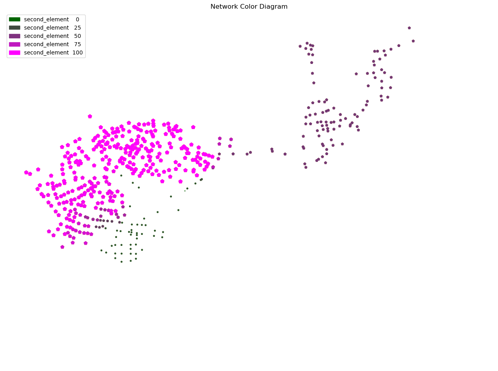

Quellspektren
Short description of example notebook for the Examples Page Additional information
PT3S Release
[1]:
#pip install PT3S -U --no-deps
Necessary packages for this Example
When running this example for the first time on your machine, please execute the cell below. Afterward, you may need to restart the kernel (using the ‘fast-forward’ button).[2]:
#pip install - q ...
Imports
[29]:
import os
import logging
import pandas as pd
import networkx as nx
import numpy as np
import matplotlib.pyplot as plt
#...
try:
from PT3S import dxAndMxHelperFcts
except:
import dxAndMxHelperFcts
try:
from PT3S import Rm
except:
import Rm
try:
from PT3S import ncd
except:
import ncd
#...
[4]:
import importlib
[5]:
#importlib.reload(ncd)
[6]:
#import inspect
#source_code = inspect.getsource(ncd)
#print(source_code)
Logging
[7]:
logger = logging.getLogger()
logFileName= r"Example7.log"
loglevel = logging.DEBUG
logging.basicConfig(filename=logFileName
,filemode='w'
,level=loglevel
,format="%(asctime)s ; %(name)-60s ; %(levelname)-7s ; %(message)s")
fileHandler = logging.FileHandler(logFileName)
logger.addHandler(fileHandler)
consoleHandler = logging.StreamHandler()
consoleHandler.setFormatter(logging.Formatter("%(levelname)-7s ; %(message)s"))
consoleHandler.setLevel(logging.INFO)
logger.addHandler(consoleHandler)
Read Model and Results
[8]:
dbFilename="Example5"
dbFile=os.path.join(os.path.dirname(os.path.abspath(dxAndMxHelperFcts.__file__))
+'/Examples/'
+dbFilename
+'.db3'
)
[9]:
m=dxAndMxHelperFcts.readDxAndMx(dbFile=dbFile,preventPklDump=True)#maxRecords=-1
INFO ; Dx.__init__: dbFile (abspath): c:\users\aUserName\3s\pt3s\Examples\Example5.db3 exists readable ...
INFO ; dxAndMxHelperFcts.readDxAndMx:
+..\Examples\Example5.db3 is newer than
+..\Examples\WDExample5\B1\V0\BZ1\M-1-0-1.1.MX1:
+SIR 3S' dbFile is newer than SIR 3S' mx1File
+in this case the results are maybe dated or (worse) incompatible to the model
INFO ; dxAndMxHelperFcts.readDxAndMx:
+..\Examples\WDExample5\B1\V0\BZ1\M-1-0-1.XML is newer than
+..\Examples\WDExample5\B1\V0\BZ1\M-1-0-1.1.MX1:
+SirCalc's xmlFile is newer than SIR 3S' mx1File
+in this case the results are maybe dated or (worse) incompatible to the model
INFO ; Mx.setResultsToMxsFile: Mxs: ..\Examples\WDExample5\B1\V0\BZ1\M-1-0-1.1.MXS reading ...
INFO ; dxWithMx.__init__: Example5: processing dx and mx ...
[57]:
dfEBES=m.dx.dataFrames['EBES']
dfEBES_BZ=m.dx.dataFrames['EBES_BZ']
[58]:
# Merge dfEBES and dfEBES_BZ on columns 'pk' and 'fk'
vEBES = pd.merge(dfEBES, dfEBES_BZ, left_on='pk', right_on='fk', suffixes=('', '_BZ')).sort_values(by=['LFDNR', 'AKTIVQS']).reset_index()
vEBES
[58]:
| index | pk | fkDE | rk | tk | NAME | LFDNR | OBJS | DELETED | SELECT1 | IDREFERENZ | pk_BZ | fkDE_BZ | fk | AKTIV | AKTIVQS | VERSAGENSW | GRAF | |
|---|---|---|---|---|---|---|---|---|---|---|---|---|---|---|---|---|---|---|
| 0 | 1 | 5408410878987506184 | 5613149064237404433 | 5408410878987506184 | 4947747250455344469 | A | 1.0 | b'FWES~5237816858835684263' | 0.0 | None | -1 | 5011706316339838135 | 5032285329913031496 | 5408410878987506184 | 101.0 | 101.0 | 0.0 | None |
| 1 | 0 | 5622504138093320653 | 5613149064237404433 | 5622504138093320653 | 5601957102971980247 | B | 2.0 | b'FWES~5175187672733343279' | 0.0 | None | -1 | 5184693889865717961 | 5032285329913031496 | 5622504138093320653 | 100.0 | 101.0 | 0.0 | None |
[59]:
# Create lists of NAME and LFDNR from the merged DataFrame
Names = vEBES['NAME'].tolist()
Lfdnrs = vEBES['LFDNR'].tolist()
[60]:
Names
[60]:
['A', 'B']
[61]:
Lfdnrs
[61]:
[1.0, 2.0]
[62]:
# Generate a list of column names based on LFDNR and NAME
expColNames = ['qs' + '_' + str(Lfdnr) + '_' + Name for Lfdnr, Name in zip(Lfdnrs, Names)]
expColNames
[62]:
['qs_1.0_A', 'qs_2.0_B']
[63]:
# Check for inactive groups with AKTIVQS as float
if not vEBES.shape == vEBES[vEBES['AKTIVQS'] == 101.0].shape:
print("Es gibt inaktive Einspeisergruppen!")
[64]:
df=m.V3_KNOT
[65]:
col_tuple = ('STAT', 'KNOT~*~*~*~ESQUELLSP', pd.Timestamp('2024-01-09 23:00:00'), pd.Timestamp('2024-01-09 23:00:00'))
[66]:
df['qsStr'] = df[col_tuple].str.decode('utf-8')
[67]:
df['qsStr'] = df['qsStr'].str.rstrip()
[68]:
df['srcvector'] = df['qsStr'].apply(lambda x: [x.split('\t')[0].strip()] + [elem.strip() for elem in x.split('\t')[1:]])
[69]:
gdf_KNOT = m.gdf_KNOT.dropna(subset=['geometry'])
[70]:
df = pd.merge(gdf_KNOT, df[['pk', 'srcvector']], on='pk', how='left')
[71]:
df['first_element'] = df['srcvector'].apply(lambda x: x[0] if isinstance(x, list) else None)
[72]:
df['second_element'] = df['srcvector'].apply(lambda x: x[1] if isinstance(x, list) else None)
[73]:
df['first_element'] = df['first_element'].astype(float)
[74]:
df['second_element'] = df['first_element'].astype(float)
[75]:
df = df.dropna(subset=['dPH'])
[76]:
# Drop rows where 'YKOR' is less than 90000 or 'XKOR' is less than 40000
df = df[(df['YKOR'] >= 90000) & (df['XKOR'] >= 40000)]
[77]:
df.head()
[77]:
| pk | fkDE | rk | tk | NAME | KTYP | XKOR | YKOR | ZKOR | QM_EIN | ... | (STAT, KNOT~*~*~*~QM, 2024-01-09 23:00:00, 2024-01-09 23:00:00) | (STAT, KNOT~*~*~*~RHO, 2024-01-09 23:00:00, 2024-01-09 23:00:00) | (STAT, KNOT~*~*~*~T, 2024-01-09 23:00:00, 2024-01-09 23:00:00) | (STAT, KNOT~*~*~*~VOLD, 2024-01-09 23:00:00, 2024-01-09 23:00:00) | PH | dPH | geometry | srcvector | first_element | second_element | |
|---|---|---|---|---|---|---|---|---|---|---|---|---|---|---|---|---|---|---|---|---|---|
| 0 | 4678355169005004036 | 5613149064237404433 | 4678355169005004036 | 4680103632661687203 | V-3354 | QKON | 55176.323661 | 98780.494875 | 29.299999 | 0.0 | ... | -0.0 | 1000.299988 | 10.0 | 0.0 | 9.065271 | -9.536743e-07 | POINT (55176.324 98780.495) | [0, 0] | 0.0 | 0.0 |
| 1 | 5759822415014073091 | 5613149064237404433 | 5759822415014073091 | 5540855804579832866 | V-1503 | QKON | 48826.419913 | 98285.548412 | 30.500000 | 0.0 | ... | 0.0 | 935.395935 | 129.782288 | 0.0 | 8.247993 | 2.906271e+00 | POINT (48826.420 98285.548) | [100, 0] | 100.0 | 100.0 |
| 2 | 4937617602785191405 | 5613149064237404433 | 4937617602785191405 | 5517245021561014546 | R-3120 | QKON | 54520.835675 | 98283.398808 | 28.100000 | 0.0 | ... | -0.0 | 1000.299988 | 10.0 | 0.0 | 9.183028 | -1.907349e-06 | POINT (54520.836 98283.399) | [0, 0] | 0.0 | 0.0 |
| 3 | 5468959419408453250 | 5613149064237404433 | 5468959419408453250 | 5025567272877293202 | V-3604 | QKON | 53007.627163 | 98806.657826 | 26.600000 | 0.0 | ... | 0.0 | 936.481689 | 128.522919 | 0.0 | 8.77282 | 3.201668e+00 | POINT (53007.627 98806.658) | [45, 55] | 45.0 | 45.0 |
| 4 | 5526072131156860534 | 5613149064237404433 | 5526072131156860534 | 4660263951317730783 | V-IHAF1 | QKON | 47711.710479 | 98384.669793 | 27.600000 | 0.0 | ... | 0.0 | 938.922852 | 125.596466 | 0.0 | 7.848343 | 1.547821e+00 | POINT (47711.710 98384.670) | [100, 0] | 100.0 | 100.0 |
5 rows × 152 columns
[78]:
fig, ax = plt.subplots(figsize=Rm.DINA3q)
nodes_patches_1 = ncd.pNcd_nodes(ax=ax,
gdf=df,
attribute='first_element', # kW
colors=['oldlace', 'orange'],
marker_style='p',
marker_size_factor=50,
#legend_fmt='',
#legend_values=[0, 20, 40, 60, 80],
zorder=1)
nodes_patches_1 = ncd.pNcd_nodes(ax=ax,
gdf=df,
attribute='second_element', # kW
colors=['darkgreen', 'magenta'],
marker_style='p',
marker_size_factor=50,
#legend_fmt='',
#legend_values=[0, 20, 40, 60, 80],
zorder=1)
all_patches = nodes_patches_1
ax.legend(handles=all_patches, loc='best')
#cx.add_basemap(ax, crs=gdf_ROHR.crs.to_string(), source=cx.providers.CartoDB.PositronNoLabels)
#cx.add_basemap(ax, crs=gdf_ROHR.crs.to_string(), source=cx.providers.CartoDB.PositronOnlyLabels)
plt.title('Network Color Diagram')
plt.savefig('Example7_Output_1.pdf', dpi=300, bbox_inches='tight')
plt.show()

[ ]:
[ ]:
try:
from PT3S import Rm
except:
import Rm
try:
from PT3S import ncd
except:
import ncd
import matplotlib.pyplot as plt
import contextily as cx